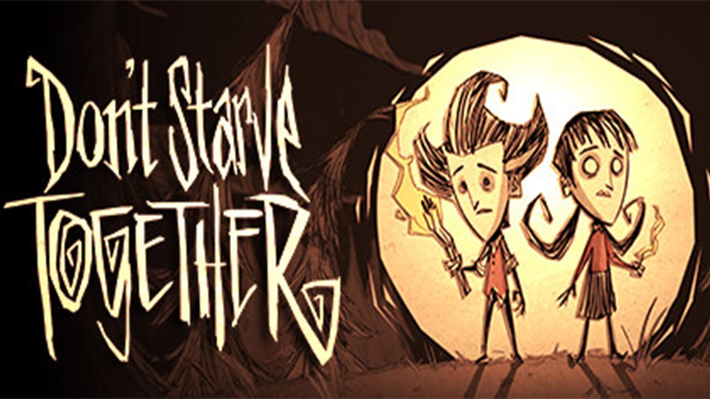

● Jocurile multiplayer
Un joc multiplayer este un joc video în care mai multe persoane pot juca în același mediu de joc în același timp, fie local, fie pe același sistem de calcul (de exemplu, New Super Mario Bros. Wii), local și pe sisteme de calcul diferite. printr-o rețea locală sau printr-o rețea extinsă, cel mai frecvent Internet (de exemplu, World of Warcraft, Call of Duty). Jocurile multiplayer necesită de obicei jucătorilor să partajeze un singur sistem de joc sau să folosească tehnologia de rețea pentru a juca împreună pe o distanță mai mare; jucătorii pot concura împotriva unuia sau mai multor concurenți umani, pot lucra în cooperare cu un partener uman pentru a atinge un obiectiv comun sau pot supraveghea activitatea altor jucători. Datorită jocurilor multiplayer care permit jucătorilor să interacționeze cu alți indivizi, acestea oferă un element de comunicare socială absent din jocurile cu un singur jucător.
Primele sesiuni seriale la scară largă folosind un singur computer au fost STAR (bazat pe Star Trek), OCEAN (o bătălie folosind nave, submarine și elicoptere, cu jucători împărțiți între două orașe de luptă) și CAVE din 1975 (bazat pe Dungeons and Dragons), creat de Christopher Caldwell (cu lucrări de artă și sugestii de Roger Long și codare de asamblare de Robert Kenney) pe DECsystem-1090 al Universității din New Hampshire. Sistemul informatic al universității avea sute de terminale, conectate prin linii serialeî, prin intermediul clusterului PDP-11 pentru accesul studenților, profesorilor și personalului. Jocurile aveau un program care rulează pe fiecare terminal, partajând un segment de memorie (cunoscut ca „segmentul înalt” în sistemul de operare TOPS-10). Jocurile au devenit populare, iar universitatea le-a interzis adesea din cauza utilizării memoriei RAM.
Istoria jocurilor multiplayer
Unele dintre cele mai vechi jocuri video au fost jocuri pentru doi jucători, inclusiv jocuri sportive timpurii (cum ar fi Tennis For Two), jocuri cu împușcături, cum ar fi Spacewar! și jocuri video de curse timpurii, cum ar fi Astro Race. Primele exemple de jocuri multiplayer în timp real au fost dezvoltate pe sistemul PLATO în jurul anului 1973. Jocurile multi-utilizator dezvoltate pe acest sistem au inclus Empire din 1973 și Spasim din 1974; acesta din urmă a fost un shooter timpuriu la persoana întâi. Alte jocuri video timpurii au inclus moduri multiplayer pe rând, populare în mașinile arcade de masă. În astfel de jocuri, jocul este alternat la un moment dat (deseori după pierderea unei vieți). Scorurile tuturor jucătorilor sunt adesea afișate pe ecran, astfel încât jucătorii să își poată vedea situația relativă. Danielle Bunten Berry a creat unele dintre primele jocuri video multiplayer, precum debutul ei, Wheeler Dealers și cea mai notabilă lucrare a ei, M.U.L.E.
Jocurile multiplayer pe rețea
Primele sesiuni seriale la scară largă folosind un singur computer au fost STAR (bazat pe Star Trek), OCEAN și CAVE din 1975, creat de Christopher Caldwell pe DECsystem-1090 al Universității din New Hampshire. Sistemul informatic al universității avea sute de terminale, conectate prin intermediul clusterului PDP-11 pentru accesul studenților, profesorilor și personalului. Jocurile aveau un program care rulează pe fiecare terminal (pentru fiecare jucător), partajând un segment de memorie partajată. Jocurile au devenit populare, iar universitatea le-a interzis adesea din cauza utilizării memoriei RAM. STAR s-a bazat pe programul de bază STAR, pentru utilizator unic, orientat pe rând, din 1974, scris de Michael O'Shaughnessy la UNH.
Modurile de joc multiplayer în rețea sunt cunoscute ca „netplay”. Primul titlu popular de joc video cu o versiune de rețea locală (LAN), Spectre din 1991 pentru Apple Macintosh, a oferit suport AppleTalk pentru până la opt jucători. Popularitatea lui Spectre a fost parțial atribuită afișării numelui unui jucător deasupra rezervorului lor cibernetic. A urmat Doom din 1993, a cărui primă versiune de rețea a permis patru jucători simultan.
Jocurile multiplayer play-by-mail folosesc e-mailul pentru a comunica între computere. Alte variante pe rând, care nu necesită ca jucătorii să fie online simultan, sunt jocurile Play-by-post și Play-by-Internet. Unele jocuri online sunt „multiplayer masiv”, cu mulți jucători participând simultan. Două genuri multiplayer masiv sunt MMORPG (cum ar fi World of Warcraft sau EverQuest) și MMORTS.
Impuscaturile la persoana intai au devenit jocuri multiplayer populare, precum Battlefield 1942 și Counter-Strike. Biblioteca site-ului OMGPOP pentru dezvoltatori și jocuri a inclus jocuri Flash multiplayer pentru jucătorii ocazionali, până când a fost închis în 2013. Unele jocuri multiplayer în rețea, inclusiv MUD-uri și jocuri online masiv multiplayer (MMO), cum ar fi RuneScape, omit un mod pentru un singur jucător. Cel mai mare MMO din 2008 a fost World of Warcraft, cu peste 10 milioane de jucători înregistrați în întreaga lume. World of Warcraft a atins apogeul la 12 milioane de jucători doi ani mai târziu, în 2010, iar în 2020 a câștigat recordul mondial Guinness pentru cel mai bine vândut joc video MMO. Această categorie de jocuri necesită mai multe mașini pentru a se conecta prin Internet; înainte ca Internetul să devină popular, MUD-urile erau jucate pe sisteme computerizate cu timp partajat, iar jocuri precum Doom erau jucate pe o rețea LAN.
Multiplayer local Pentru unele jocuri, „multiplayer” implică faptul că jucătorii joacă pe același sistem sau rețea de jocuri. Acest lucru este valabil pentru toate jocurile arcade, dar și pentru o serie de console, precum și pentru jocurile pe computer personal. Jocurile multiplayer locale jucate pe un sistem singular folosesc uneori ecran divizat, astfel încât fiecare jucător are o vedere individuală a acțiunii. Aproape toate modurile multiplayer din jocurile "beat 'em up" au o opțiune de sistem, dar jocurile de curse au început să abandoneze ecranul divizat în favoarea unui mod multiplayer cu sisteme multiple. Jocurile pe rând, cum ar fi șahul, se pretează, de asemenea, pentru un singur ecran cu un singur sistem și chiar pentru un singur controler. |
Multiplayer online Jocurile multiplayer online conectează jucătorii printr-o rețea extinsă. Spre deosebire de multiplayer local, jucătorii care joacă multiplayer online nu sunt restricționați la aceeași rețea locală. Acest lucru permite jucătorilor să interacționeze cu ceilalți de la o distanță mult mai mare. |
 |
|
Gameplay asimetric Multiplayerul asimetric este un tip de joc în care jucătorii pot avea roluri sau abilități semnificativ diferite unul de celălalt – suficient pentru a oferi o experiență semnificativ diferită a jocului. În jocurile cu asimetrie ușoară, jucătorii împărtășesc unele dintre aceleași mecanici de bază, dar au roluri diferite în joc; aceasta este o caracteristică comună a genului multiplayer online Battle Arena (MOBA), cum ar fi League of Legends și DOTA 2, și în shooter-urile cu eroi, cum ar fi Overwatch și Apex Legends. În jocurile cu elemente mai puternice de asimetrie, un jucător/echipă poate avea o experiență de joc, în timp ce celălalt jucător sau echipă joacă într-un mod drastic diferit, cu mecanisme diferite, un tip diferit de obiectiv sau ambele. Exemple de jocuri cu asimetrie puternică includ Dead by Daylight, Evolve și Left 4 Dead. |
Multiplayer asincron Multiplayer asincron este o formă de joc multiplayer în care jucătorii nu trebuie să joace în același timp. Această formă de joc multiplayer își are originile în jocurile play-by-mail, în care jucătorii își trimiteau mișcările prin poștă unui maestru de joc, care apoi compila și trimitea rezultate pentru următorul turn. Jocurile play-by-mail au trecut la forma electronică ca jocuri play-by-mail. Jocuri similare au fost dezvoltate pentru sistemele de buletin, cum ar fi Trade Wars, unde structura turnului poate să nu fie la fel de riguroasă și permite jucătorilor să întreprindă acțiuni în orice moment într-un spațiu de persistență alături de toți ceilalți jucători, un concept cunoscut sub numele de joc sporadic. |
Cele mai mari jocuri multiplayer:
 |
 |
|  |  |